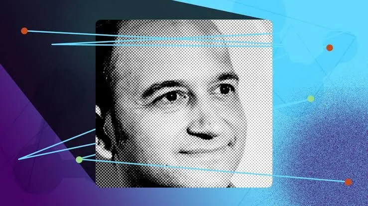

Why Google paid $2.7 billion to bring Noam Shazeer back
Originally posted on LinkedIn, March 12, 2025.
Google said no to Noam Shazeer, then paid $2.7 billion to bring him back. Shazeer may not be a household name, but he is one of the people who changed AI.
In 2017, he co-authored the paper "Attention Is All You Need," which introduced the Transformer architecture. It became the foundation for today's advanced AI models, from ChatGPT to Gemini.
While working at Google, Shazeer developed Meena, an especially advanced chatbot. Google decided not to launch it. He left and founded Character.AI with Daniel De Freitas, and their startup quickly took off.
While companies such as OpenAI and Meta received most of the attention, Character.AI built new models and attracted millions of users. Its platform lets people have interactive conversations with AI characters that adapt to their conversational style, creating engaging and creative experiences. The combination of curiosity about talking to different characters and amazement at the AI's ability to hold a conversation turned it into a major product. By March 2025, Character.AI had around 20 million active users.
In 2024, Google paid $2.7 billion to bring Shazeer, De Freitas, and a team of 30 employees back. The deal did not include an acquisition of Character.AI, but Google received a non-exclusive license to the company's technology.
Shazeer is now back at Google, leading the Gemini AI project, the company's answer to ChatGPT and the other competitors in the AI race.
The lesson I take from this is simple. Real innovation does not wait for permission. Sometimes the only way to make the world understand your value is to go and build it yourself.
